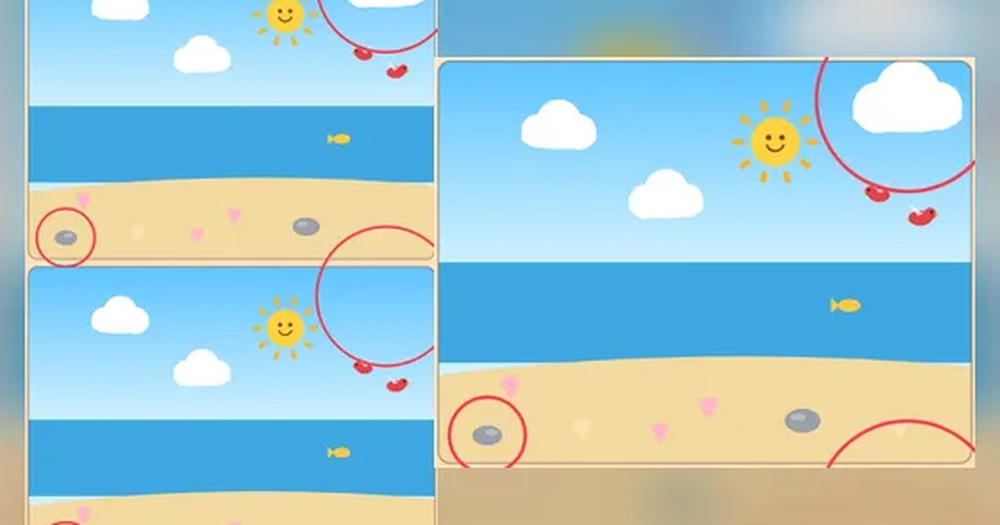

틀린 그림 찾기
Spot the Difference
관찰 · 찾기무료설치 없음폰 · PC
▶ 지금 바로 하기로그인 없이 브라우저에서 바로 시작돼요
어떤 게임인가요?
위아래 두 그림에서 서로 다른 곳을 찾아 누르세요! 그림은 매번 새로 그려져요. 놀이공원 · 바닷속 · 농장 · 우주까지 10가지 장면, 끝없이 이어지는 ⏱ 타임 어택으로 몇 장까지 깰 수 있는지 도전해 보세요.
목표 · 두 그림에서 서로 다른 곳을 모두 찾아 누르세요.
이렇게도 찾아요
다른 그림 찾기숨은그림찾기spot the differencefind the difference
#틀린그림찾기 #다른그림찾기 #두뇌게임 #치매예방
게임 방법
- 두 그림 중 아무 쪽이나 다른 곳을 누르면 동그라미가 그려져요.
- 다른 점은 색 바뀜 · 사라짐 · 새로 생김 · 크기 · 방향이 바뀐 것 등이에요.
- 엉뚱한 곳을 누르면 실수 1번, 시간 +3초.
- 다른 곳을 모두 찾으면 성공. 빨리, 실수 없이 찾을수록 별이 많아요. 💡 힌트를 쓰면 별 1개.
- 그림은 단계마다 새로 그려져요. 깬 그림은 사진첩에 모이고, 한 장(8단계)을 다 깨면 사진첩 한 권 완성. 모두 10장 · 80단계.
- ⏱ 타임 어택: 60초에서 시작해 한 곳 찾을 때마다 +2초, 한 장 깨면 +8초, 헛짚으면 -3초. 그림은 10가지 장면에서 끝없이 새로 나오고, 갈수록 다른 곳이 많아져요. 몇 장까지 깰 수 있을까?
등장하는 것들
- 빨간 동그라미 · 찾은 곳
- 노란 동그라미 · 힌트
- 사진첩 · 장마다 8장
공략 팁
- 한쪽 그림을 구역별로 나눠 차례로 비교해 보세요.
- 색이 바뀐 것은 풍선 · 꽃 · 지붕처럼 색 있는 물건에 많아요.
- 새·물고기·배는 방향이 뒤집혔는지 보세요.
 딱지치기
딱지치기 포탄 대작전
포탄 대작전 1 to 50
1 to 50 장기
장기 코너킹 드리프트
코너킹 드리프트 폴짝 개구리
폴짝 개구리